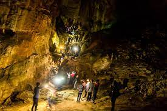
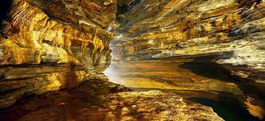
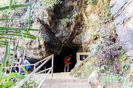
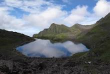
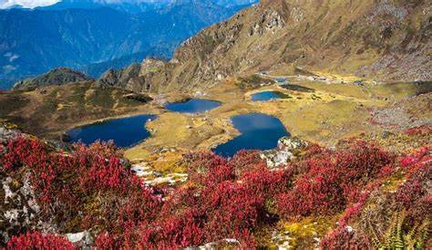

“A platform where you find your digitalized guide.”
EcoTourism
Siddha Gufa in Bandipur



Siddha Gufa is considered to be Nepal's largest cave, measuring 437 metres deep and 50 metres high. Its cathedral-like interior is filled with stalactites and stalagmites, as well as hundreds of bats that whistle overhead. Trekking to and from Bandipur is a popular (although muddy) half-day adventure that requires a 1½-hour climb each way. Consider hiring a guide from the Bandipur Tourist Information Centre. Alternatively, you can walk up to the cave from Bimalnagar via the Prithvi Highway, which takes only 45 minutes.
Time to visit:
March and May.You wouldn't mind a half day trip to this mysterious cave in Nepal.
Location:
Siddha Cave or Siddha Gufa is a cave located in Bimalnagar, Tanahun District, Nepal.
Panch Pokhari


Panch Pokhari, or "Five Lakes," is a significant pilgrimage place and natural beauty in Nepal's Sindhupalchok province. It is a collection of five glacial lakes located at an elevation of 4,100 metres (13,451 feet) in the Langtang region of the Himalayas. Panch Pokhari is notable for its distinct characteristics and cultural significance.Panch Pokhari is renowned for its unspoiled natural beauty and magnificent vistas. The lakes are flanked by panoramic vistas of snow-capped peaks like as Dorje Lakpa, Jugal Himal, Langtang Lirung, and Rolwaling Himal, which provide a spectacular backdrop to the tranquil waters. The area is very abundant in wildlife. It boasts rich flora and fauna, including rare and endangered species such as red pandas, snow leopards, and Himalayan monkeys, making it a paradise for nature lovers and wildlife enthusiasts.
Time to visit:
April, May, September, October, November
Location:
Panch Pokhari is one of the main features of Langtang National park, located in the Nuwakot, Rasuwa and Sindhuplachowk districts . There are two trekking routes that lead to Panch Pokhari. One begins from Sano Okhareni via Chautara, and the other begins from Bhotang village via Melamchi. The second route from Bhotang village is comparatively easy and short. Depending upon your time, you can choose either of these routes, and we will make a tailored Panch Pokhari trek itinerary for you. You can do the Panch Pokhari trek following a short or long route as you wish.